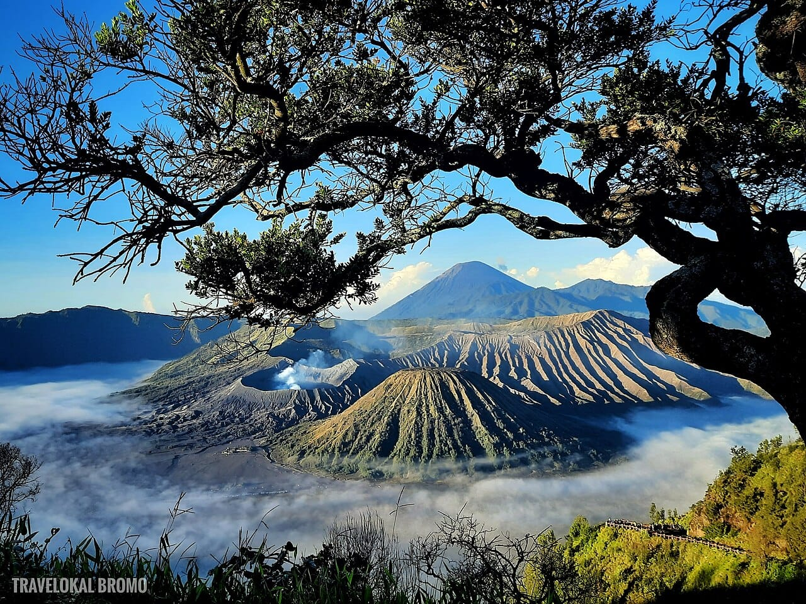

Destinasi wisata
Berikut adalah objek wisata menarik di jawa timur.

Gunung BromoGunung bromo merupakan salah satu tempat wisata terkenal yang berada di jawa timur.
 Kawah ijen
Kawah ijen
Kawah ijen merupakan salah satu tempat wisata yang terkenal di jawa timur.
 Air terjun coban rondo
Air terjun coban rondo
Air terjun coban rondo merupakan salah satu tempat wisata terkenal yang berada di jawa timur.
musik nusantara
Silahkan dengarkan musik berikut sambil menikmati informasi wisata indonesia.
Wonderland indonesia
Silahkan melihat video berikut sambil menikmati informasi wisata indonesia